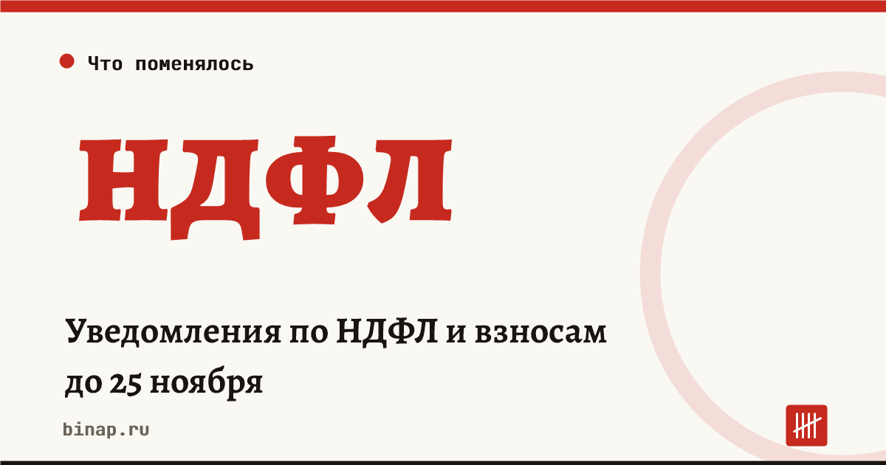

25 ноября: какие налоговые уведомления подать работодателю

Если ИП или компания выплачивает доходы физлицам, проверьте уведомление об исчисленных суммах до 25 ноября 2026 года. В этот срок ФНС ждёт сведения по НДФЛ, удержанному с 1 по 22 ноября, и страховым взносам за октябрь. В отдельных случаях уведомление подают и налоговые агенты по налогу на прибыль.
Коротко
- Используется форма КНД 1110355.
- НДФЛ за 1–22 ноября — код периода
34/02. - Взносы за октябрь — код периода
34/01. - Для НДФЛ за 23–30 ноября следующий срок — 3 декабря, код периода
34/12. - Срок уведомления и срок уплаты налога — разные даты.
Что указать по НДФЛ
Сверьте выплаты физлицам и удержанный налог за 1–22 ноября. В уведомлении за этот интервал укажите код периода 34/02. НДФЛ за 23–30 ноября относится к следующему уведомлению: его нужно подать не позднее 3 декабря с кодом 34/12.
Что проверить по страховым взносам
В уведомление к сроку 25 ноября включают страховые взносы, исчисленные за октябрь. Для них ФНС указывает код периода 34/01. Сверьте базу, применённый тариф и сумму с начислениями за месяц.
Если вы налоговый агент по налогу на прибыль, проверьте, возникает ли в вашей ситуации обязанность подать уведомление за октябрь.
Куда отправить уведомление
ФНС принимает уведомление по телекоммуникационным каналам связи, через личный кабинет ИП или юридического лица, а также лично или по почте. Перед отправкой сверьте КБК, ОКТМО, период и сумму, чтобы обязательство корректно отразилось на едином налоговом счёте.
Если уведомление подавали заранее
С 1 сентября 2026 года НДФЛ и страховые взносы можно включать в предварительные уведомления сразу за несколько периодов до конца года. Если фактическая сумма оказалась выше заявленной, ФНС требует корректирующее уведомление. При меньшей сумме уточнение не требуется: разница учитывается после подачи соответствующей отчётности.
Чек-лист перед сроком
- Сверьте НДФЛ за период с 1 по 22 ноября.
- Проверьте страховые взносы за октябрь и тариф.
- Проверьте, нужно ли уведомление по налогу на прибыль налогового агента.
- В форме КНД 1110355 укажите периоды
34/02и34/01для соответствующих сумм. - Отправьте документ до 25 ноября и отдельно проверьте календарь уплаты.
Вопросы и ответы
До какого числа подать уведомление по НДФЛ за 1–22 ноября?
Не позднее 25 ноября 2026 года. Для этого периода ФНС указывает код 34/02.
Какой код указать для страховых взносов за октябрь?
Код налогового периода 34/01.
Что делать, если фактическая сумма выше предварительного уведомления?
Подать корректирующее уведомление с уточнённой суммой.